国内的网络环境我不说相信大家都懂。虽然墙内的世界很丰富，但是墙外的世界还有着更加精彩的内容。这不得不让我想起了曾经看过的一部漫画——进击的巨人。大部分人都在墙内过着安逸的生活，但是总有那么一帮人，想要去墙外探索未知的世界。我就是这样的人！【然后收到了女票的好人卡一张😃】之前因为想要体验 Google 搜索、体验 Youtube、查阅学习资料，还有玩的部分游戏需要翻墙，找了很多免费的代理和 VPN，效果都不好，断断续续的。后来经过舍友的推荐，入了 Shadowsocks 的坑。体验了有两个月左右，效果很棒，访问速度也很快，强烈推荐给大家使用！！！(●’◡’●)
购买服务
- 点击进入 Shadowsocks【此链接是我的推广链接，你点击后还是会直接进入首页，但是通过这个链接购买服务后我也会获得一些好处啦，嘿嘿(^_^)】，进入首页后选择
订购服务。 - 之后选择你想要购买的服务，点击现在订购。我选择的是
Shadowsocks.com 普通版。需要注意的是，虽然显示的价格是美元，但是在后面支付的时候会自动转化为人民币。
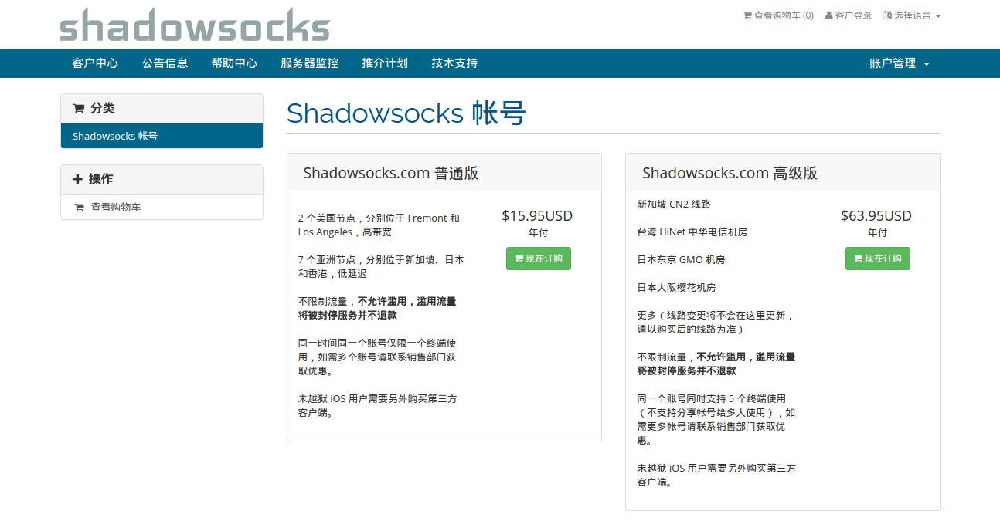 - 界面上选择你的付款年限，然后点击继续。
- 在结账页面，你需要填写各种信息，需要认真填写，这也是在创建账号。
- Shadowsocks 支持 Alipay 支付宝国际版。之后付款就可以了，现在大约是 104 块钱一年。我买的时候，订购服务时显示的还是人民币，99块钱一年。虽然贵了一点点，不过还是可以接受的。
- 之后进入 客户中心，用第4步创建的账号登陆。
- 点击产品服务，可以看到你刚刚购买的服务，状态为有效。
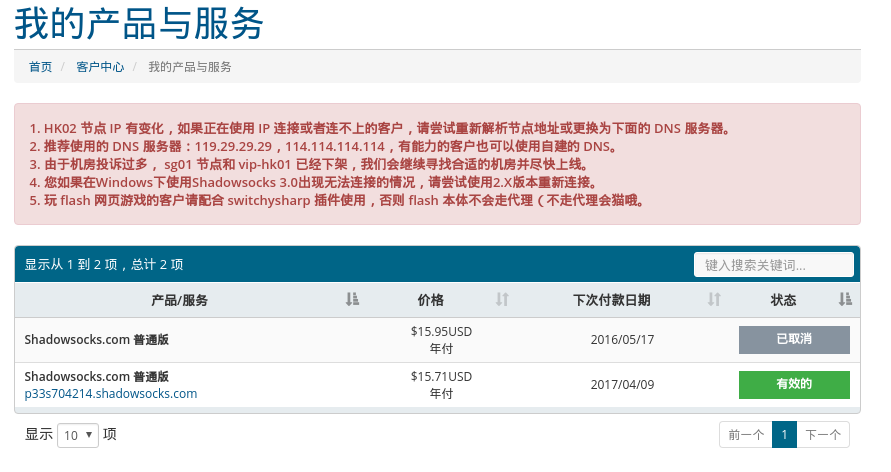 - 点击刚刚购买的服务，会看到产品详情。下面有配置文件下载，选择 Windows 版下载。下载下来是
gui-config.json。
客户端安装使用
支持的客户端：OS X， Windows， Linux， iOS， Android， OpenWRT 路由器等。
详情请参考：客户端 - Shadowsocks，客户端都在 Github 上。
Windows 客户端
- 点击下载 Shadowsocks-3.0.zip【写这篇博客时候的最新版本】，或者去 Github - Shadowsocks Windows 上寻找其他版本。
- 解压后有一个
Shadowsocks.exe文件。最好把这个文件放到一个目录下，比如新建一个 Shadowsocks 文件夹。 - 把刚刚下载的
gui-config.json文件放到与Shadowsocks.exe相同的目录下。 - 双击
Shadowsocks.exe，会出现一个 GUI 界面，自动读取了gui-config.json文件中的内容。
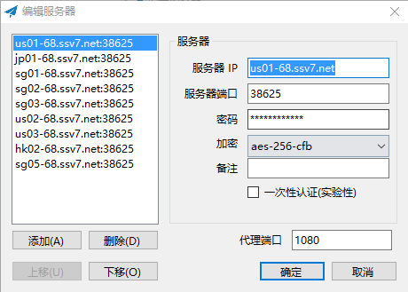 - 在右下角托盘图标上会有一个好像纸飞机的 Shadowsocks 图标，
右键->启动系统代理，就可以越过墙壁，浏览更多丰富多彩的内容啦~
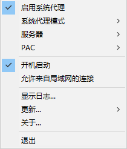 - 另外建议设置成
右键->开机启动，这样不用每次开机手动启动了。还可以在右键->服务器中选择不同的服务器。
Android 客户端
- 点击下载 Shadowsocks-nightly-2.10.3.apk【写这篇博客时候的最新版本】，或者去 Github - Shadowsocks Android 上寻找其他版本。
- 把这个 apk 安装到手机上【可以传到手机里，打开这个 apk 就能安装了】，中文叫影梭。
- 安装完成后仍然需要配置，支持扫描二维码配置，但是需要下载一个客户端。我不喜欢下太多的客户端，所以就手动配置，具体的值可以用记事本打开
gui-config.json查看。
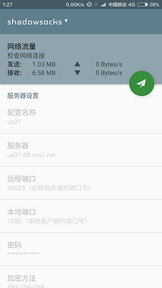 - 翻墙后就可以去 Google Play 商店更新 Shadowsocks 了(●’◡’●)
2016-09-27 更新
- 目前最新版的 Shadowsocks 已经支持直接扫码配置了，不需要下载额外的客户端。在 Shadowsocks 官网里
客户中心--有效产品与服务里就可以找到各个节点的二维码。
Linux 客户端
经历了N天之后,终于在舍友的指导下配置完成了。不得不说，Linux 真是一个让人折腾的系统。不过后来发现，其实还蛮简单的（╯－＿－）╯╧╧
- 首先你需要下载 Chrome 浏览器 【不需要翻墙】，已经有的小伙伴就不用重新下载了。
- 使用如下命令安装你下载下来的 Chrome 安装包：
1
sudo dpkg -i xxx-chrome-xxx.deb
- 通过 PPA 源安装 Shadowsocks-qt5，仅支持 Ubuntu 14.04 或更高版本。
1
2
3sudo add-apt-repository ppa:hzwhuang/ss-qt5
sudo apt-get update
sudo apt-get install shadowsocks-qt5 - 之后就可以在应用列表里搜索到 Shadowsocks-qt5 了
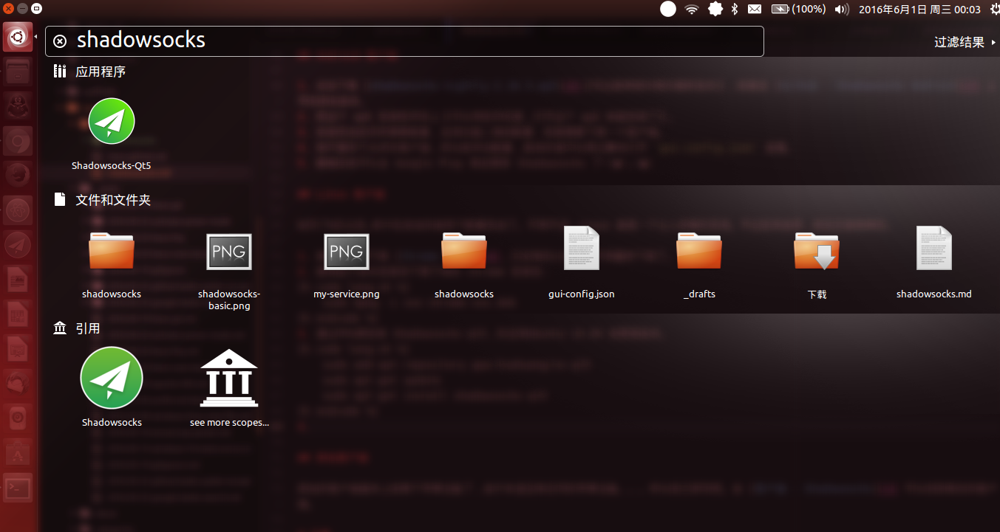 - 打开图形化界面，点击
文件 -> 从 gui-config.json 导入链接，接着就会像下图一样。
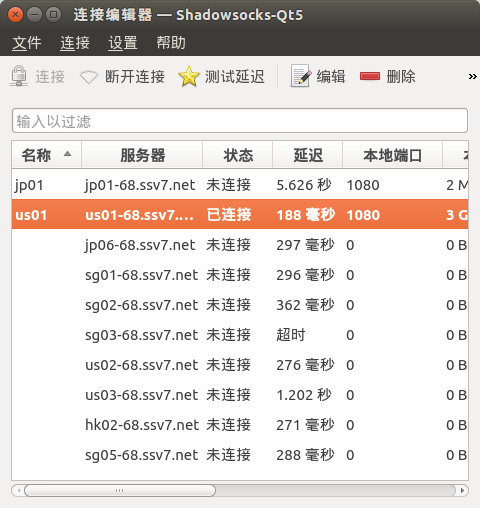 - 上图的 jp01 和 us01 都是后来配置好的，导入 gui-config.json 后还是有些需要自己配置。双击某一条连接，像我如下这样配置【默认有的配置就不要改了】：
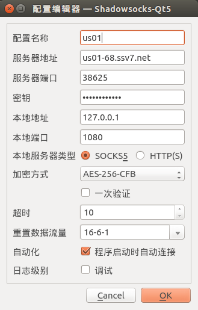 - 配置完成后点击
OK，再点击界面上面的连接，测试下延迟，看看是否能连接上。可以多配置几个，方便切换~ - 接下来就是配置 Chrome，让 Chrome 可以使用代理。下载安装 SwitchySharp 【目前此应用已经更新为 SwitchyOmega，请参考 Chrome 配置 SwitchyOmega】。
- 打开 Chrome， 点击右上角的 图标，再点击
选项。
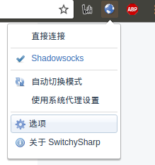 - 点击
新建情景模式，做如下配置。
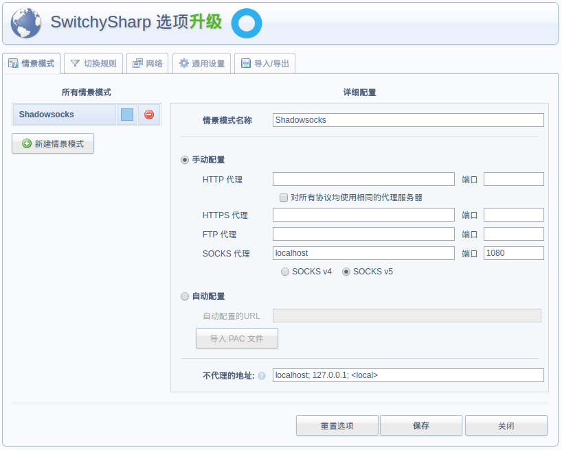 - 保存后再点击 图标就会有你刚刚配置的情景模式，选择后就可以使用 Chrome 浏览器浏览墙外的世界啦~【另外 SwitchySharp 可以升级成 SwitchyOmega 了，有兴趣的小伙伴可以试一试！】
- 做了上述一系列操作后只有在 Chrome 中可以翻出墙外，至于全局代理我正在研究，过几天会出教程，有会的小伙伴也可以交 ♂ 流下~【此坑算是没时间填了(╯‵□′)╯︵┻━┻】
IOS 客户端
由于本渣没有任何的苹果设备。。。所以自己研究吧，相信聪明的你可以完成的！去 客户端 - Shadowsocks 可以找到相关的客户端。
2016-09-27 更新
最近也是人品爆表，抽奖抽到了个 IPad mini 2，自然就研究了下如何在 IOS 中试用 Shadowsocks 了。官方推荐的客户端是 shadowrocket。App Store 里卖6块钱。我找到的是 Lifi客户端-Shadowsocks and ShadowsocksR VPN，也是在 App Store 里下载，不过是免费的。两者的配置方式基本一样，都可以扫码配置。在 Shadowsocks 官网里客户中心--我的产品与服务里就可以找到各个节点的二维码。
Lifi 配置，在应用里选择
设置--从二维码导入就会打开扫码界面，之后配置一下代理名称，打开系统 VPN 就可以了，非常简单【我觉得有张图挺好看的，于是强行加了张图(^_^)】。：
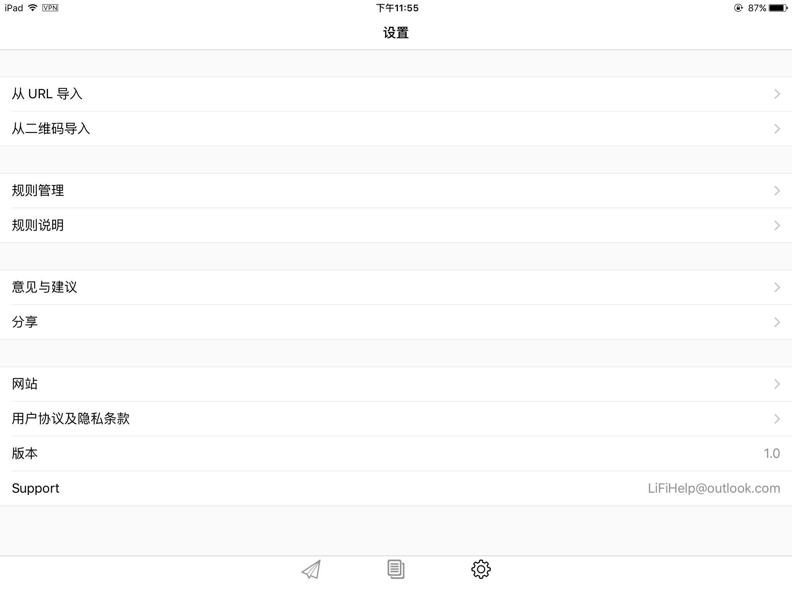Shadowrocket 配置，打开应用，点击左上角的扫码图标就可以打开扫码页面：
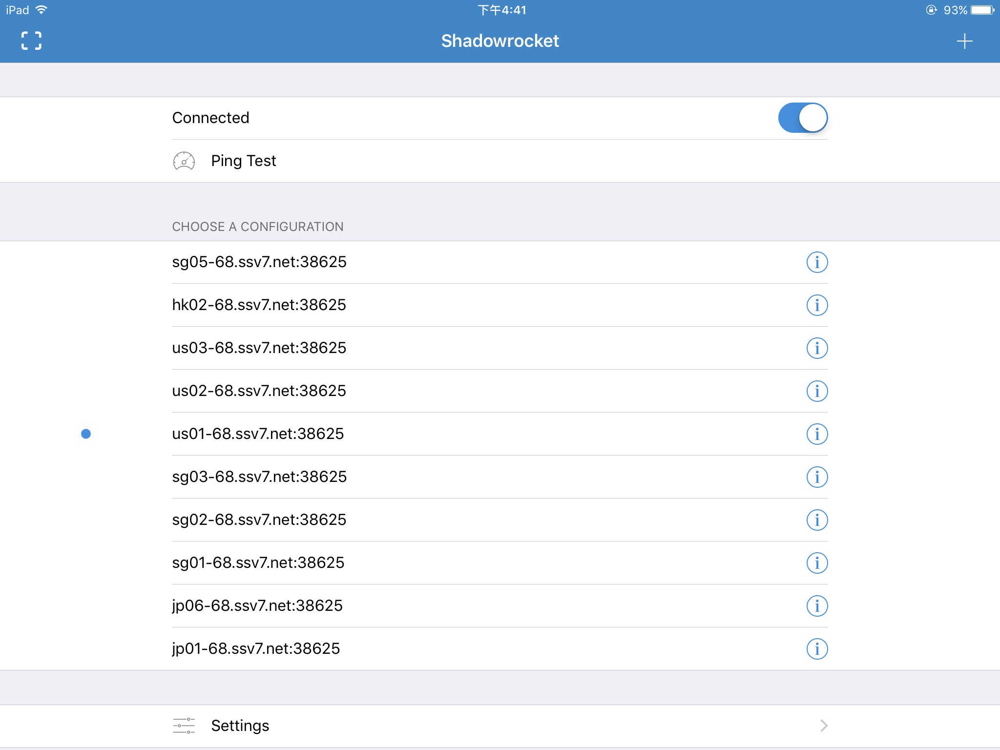
看评论说Lifi客户端-Shadowsocks and ShadowsocksR VPN是拿的 Potatso 源码？我也不知道是否真实，有了解的小伙伴欢迎联系我。不过在我一天的试用中发现这个客户端一直掉线，而且舍友 IOS 10 也没法使用，于是我俩都换成了 shadowrocket，IOS 10 可以用，不过也是一直掉线啊，而且有时候还闪退(╯‵□′)╯︵┻━┻！如果用 Shadowrocket 的小伙伴发现QQ聊天的时候没法接收和发送图片，可以在应用的 Settings-Global Routing中选择 Proxy 就好了。大家可以先试一下免费的 Lifi，如果不好用再换成收费的那个 Shadowrocket 吧。有更好的客户端也欢迎在下面讨论。
注意
- 要是偶尔发现网络不稳定，切换线路试一下。
- 不要同时在多台设备上使用，也不要把配置文件分享给其他人，可能会遭到封号行为。不过手机和 PC 同时使用时没事的。
- 我遇到一个问题就是启动某些服务器无法下载 Google Play 里的应用，而且有些应用也提示无法在你所在的国家或者地区购买，这个时候就切换下线路，并且清除 Google Play 数据重启就行了。
参考资料
中文文档 - Shadowsocks-qt5
Chrome 配置 SwitchyOmega - 笑话人生 【Shadowsocks 配合 SwitchyOmega 使用有奇效，建议尝试下(●’◡’●)】
文章标题：站在 Shadowsocks 的肩膀上发现精彩的世界
文章作者：cylong
文章链接：http://www.cylong.com/blog/2016/05/26/shadowsocks/
有问题或者建议欢迎在下方评论。欢迎转载、引用，但希望标明出处，感激不尽(●’◡’●)